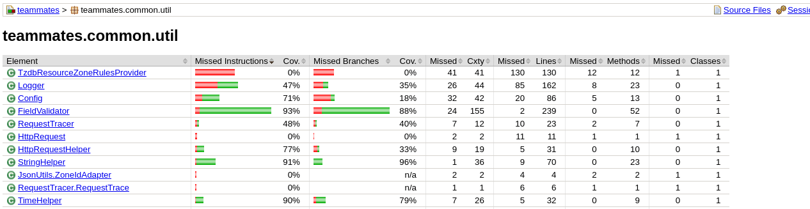

Testes de Unidade

| FGA 0238 Testes de Software - Turma 02 | Semestre | 2023.1 | |
| Nome | Nicolas Chagas Souza | Matrícula | 20/0042327 |
| Equipe | PassaNada | ||
Atividade 3 – Desenvolver Testes de Unidade
Identificação do Projeto
A aplicação em teste é o TEAMMATES, que fornece funcionalidades para avaliação entre pares. Para utilizar o sistema, um instrutor deve solicitar uma conta na plataforma, em seguida, ele pode criar cursos, inscrever alunos nesses cursos, separados por grupos, e gerar sessões de avaliações por pares, onde cada integrante avalia a si mesmo e aos demais integrantes do grupo, por meio de questões definidas pelo instrutor.
O fork utilizado está disponível no link.
Cobertura de Testes
A execução dos testes de backend gerou o relatório representado nas figuras seguintes.



Método testado
O método escolhido para teste foi o getMidnightAdjustedInstanteBaseOnZone da classe teammates.common.util.TimeHelper.
| teammates.common.util.TimeHelper.java | |
|---|---|
1 2 3 4 5 6 7 8 9 10 11 12 13 14 15 16 | |
Classe de Testes
Antes da incrementação dos testes existentes, o método de teste da classe estava no seguinte estado:
| teammates.common.util.TimeHelperTest.java | |
|---|---|
1 2 3 4 5 6 7 8 9 10 11 12 13 14 15 16 17 18 19 20 21 22 23 24 25 26 27 28 29 30 31 32 33 | |
Tabela de decisões/condições
| Decisão | Situação para true |
Situação para false |
|---|---|---|
| 3 | O instant é um entre:Const.TIME_REPRESENTS_FOLLOW_OPENINGConst.TIME_REPRESENTS_FOLLOW_VISIBLEConst.TIME_REPRESENTS_LATERConst.TIME_REPRESENTS_NOW |
O instant não é uma dessas constantes. |
| 7 | A formatação do tempo é para frente (isForward == true) e o horário é 23:59 |
A formatação do tempo não é para frente (isForward == false) ou o horário é diferente de 23:59. |
| 9 | A formatação do tempo não é para frente (isForward == false) e o horário é 00:00 |
A formatação do tempo é para frente (isForward == true) ou o horário é diferente de 00:00. |
| Decisão | Condição | Situação para true |
Situação para false |
|---|---|---|---|
| 3 | isSpecialTime(instant) |
instant é um entre:Const.TIME_REPRESENTS_FOLLOW_OPENINGConst.TIME_REPRESENTS_FOLLOW_VISIBLEConst.TIME_REPRESENTS_LATERConst.TIME_REPRESENTS_NOW |
instant é diferente desses. |
| 7A | isForward |
isForward==true |
isForward==false |
| 7B | zonedDateTime.getHour() == 23 |
O instant está entre 23:00 e 23:59. |
O instant está fora do intervalo de 23:00 à 23:59. |
| 7C | zonedDateTime.getMinute() == 59 |
O instant é do tipo hh:59, com hh entre 0 e 23. |
O instant é do tipo hh:mm, com mm != 59. |
| 9A | !isForward |
isForward==false |
isForward==true |
| 9B | zonedDateTime.getHour() == 0 |
O instant está entre 00:00 e 00:59. |
O instant está fora do intervalo de 00:00 à 00:59. |
| 9C | zonedDateTime.getMinute() == 0 |
O instant é do tipo hh:00, com hh entre 0 e 23. |
O instant é do tipo hh:mm, com mm != 00. |
Especificação dos Casos de Teste
A técnica das combinações múltiplas foi utilizadas para a determinação dos casos de teste, representados na tabela a seguir. Observe que 7A e 9A são opostas, então não é possível 7A == 9A. As condições 7B e 9B são incompatíveis, então não é possível ter 7B == 9B. As condições 7C e 9C são incompatíveis, então não é possível ter 7C == 9B. Como todas as constantes especiais de tempo possuem horário 00:00, a condição 3 ser verdadeira implica em 9B e 9C verdadeiros e 7B e 7C falsos. Levando em consideração esses fatores, as combinações possíveis entre as decisões 7A, 7B e 7C e as decisões 9A, 9B e 9C foram representadas na tabela a seguir.
| Número da combinação | 3 | 7A | 7B | 7C | 9A | 9B | 9C | Caso de Teste |
|---|---|---|---|---|---|---|---|---|
| #1 | X | 3 | ||||||
| #2 | 4 | |||||||
| #3 | 5 | |||||||
| #4 | 2 | |||||||
| #5 | X | 1 | ||||||
| #6 | 6 | |||||||
| #7 | 7 | |||||||
| #8 | 8 |
X denota o 'don't care'.
| Número | Condições | Condição de Entrada | Combinações | Saída Esperada | ||
instant |
timeZone |
isForward |
| 3 | 7A | 7B | 7C | 9A | 9B | 9C | | |||
| 1 | 1, 3, 6, 8, 10, 11, 13 | TIME_REPRESENTS_FOLLOW_OPENING¹ |
GMT-3 | true | | |
TIME_REPRESENTES_FOLLOW_OPENING |
| 2 | 2, 4, 5, 7, 9, 12, 14 | 2023-05-31 23:59:00 | GMT-3 | false | | |
2023-05-31 23:59:00 |
| 3 | - | 2023-05-31 00:00:00 | GMT-3 | false | | |
2023-05-30 23:59:00 |
| 4 | - | 2023-05-31 00:59:00 | GMT-3 | false | | |
2023-05-31 00:59:00 |
| 5 | - | 2023-05-31 23:00:00 | GMT-3 | false | | |
2023-05-31 23:00:00 |
| 6 | - | 2023-05-31 00:59:00 | GMT-3 | true | | |
2023-05-31 00:59:00 |
| 7 | - | 2023-05-31 23:00:00 | GMT-3 | true | | |
2023-05-31 23:00:00 |
| 8 | - | 2023-05-31 23:59:00 | GMT-3 | true | | |
2023-06-01 00:00:00 |
¹
Const.TIME_REPRESENTS_FOLLOW_OPENING = TimeHelper.parseInstant("1970-12-31 00:00:00Z")como o horário dessa constante é 0:00, ela já satisfaz as condições 11 e 13.
Implementação dos Casos de Teste
| TimeHelperTest.java | |
|---|---|
1 2 3 4 5 6 7 8 9 10 11 12 13 14 15 16 17 18 19 20 21 22 23 24 25 26 27 28 29 30 31 32 33 34 35 36 37 38 39 40 41 42 43 44 45 46 47 48 49 50 51 52 53 54 55 56 57 58 59 60 61 62 63 64 65 66 67 68 69 70 71 72 73 74 75 76 | |
Análise e Resultados
Após a execução dos testes da classe TimeHelperTest.java o seguinte resultado foi obtido na console.
> Task :compileJava UP-TO-DATE
> Task :processResources UP-TO-DATE
> Task :classes UP-TO-DATE
> Task :compileTestJava UP-TO-DATE
> Task :processTestResources UP-TO-DATE
> Task :testClasses UP-TO-DATE
> Task :componentTests
Jun 19, 2023 7:53:04 PM teammates.common.util.Logger info
INFO: teammates.logic.core.LogicStarter:initializeDependencies:43: Initialized dependencies between logic classes
[=============================teammates.common.util.TimeHelperTest=============================]
teammates.common.util.TimeHelperTest completed
Jun 19, 2023 7:53:04 PM com.google.cloud.testing.BlockingProcessStreamReader writeLog
INFO: [datastore] Adding handler(s) to newly registered Channel.
component-tests > component-tests > teammates.common.util.TimeHelperTest > testEndOfYearDates PASSED
component-tests > component-tests > teammates.common.util.TimeHelperTest > testFormatDateTimeForDisplay PASSED
component-tests > component-tests > teammates.common.util.TimeHelperTest > testGetInstantDaysOffsetBeforeNow PASSED
component-tests > component-tests > teammates.common.util.TimeHelperTest > testGetInstantDaysOffsetFromNow PASSED
component-tests > component-tests > teammates.common.util.TimeHelperTest > testGetInstantHoursOffsetFromNow PASSED
component-tests > component-tests > teammates.common.util.TimeHelperTest > testGetInstantNearestHourBefore PASSED
component-tests > component-tests > teammates.common.util.TimeHelperTest > testGetMidnightAdjustedInstantBasedOnZone PASSED
component-tests > component-tests > teammates.common.util.TimeHelperTest >
testGetMidnightAdjustedInstantBasedOnZoneWithProjectsTimeConstantShouldReturnSameConstant PASSED
component-tests > component-tests > teammates.common.util.TimeHelperTest >
testGetMidnightAdjustedInstantBasedOnZoneWithTime0000notForwardShouldReturnPreviousDayAt2359 PASSED
component-tests > component-tests > teammates.common.util.TimeHelperTest >
testGetMidnightAdjustedInstantBasedOnZoneWithTime0059andForwardShouldReturnSameInstant PASSED
component-tests > component-tests > teammates.common.util.TimeHelperTest >
testGetMidnightAdjustedInstantBasedOnZoneWithTime0059notForwardShouldReturnSameInstant PASSED
component-tests > component-tests > teammates.common.util.TimeHelperTest >
testGetMidnightAdjustedInstantBasedOnZoneWithTime2300andForwardShouldReturnSameInstant PASSED
component-tests > component-tests > teammates.common.util.TimeHelperTest >
testGetMidnightAdjustedInstantBasedOnZoneWithTime2300notForwardShouldReturnSameInstant PASSED
component-tests > component-tests > teammates.common.util.TimeHelperTest >
testGetMidnightAdjustedInstantBasedOnZoneWithTime2359andForwardShouldReturnNextDayAt0000 PASSED
component-tests > component-tests > teammates.common.util.TimeHelperTest >
testGetMidnightAdjustedInstantBasedOnZoneWithTime2359notForwardFalseShouldReturnSameInstant PASSED
Nenhuma falha foi identificada na funcionalidade por meio dos testes realizados, uma vez que todos passaram com sucesso. A criação dos testes aumentou a cobertura de testes do método, conforme ilustrado na figura a seguir.
Pull Request
Links
| Descrição | URL |
|---|---|
| Fork do projeto | https://github.com/nszchagas/teammates |
| Implementação no projeto | https://github.com/nszchagas/teammates/blob/master/src/test/java/teammates/common/util/TimeHelperTest.java |
| Commit da implementação | https://github.com/nszchagas/teammates/commit/994a659202bcf2e25adad1450b5a0658eada7510 |
| Pull Request | https://github.com/TEAMMATES/teammates/pull/12486 |